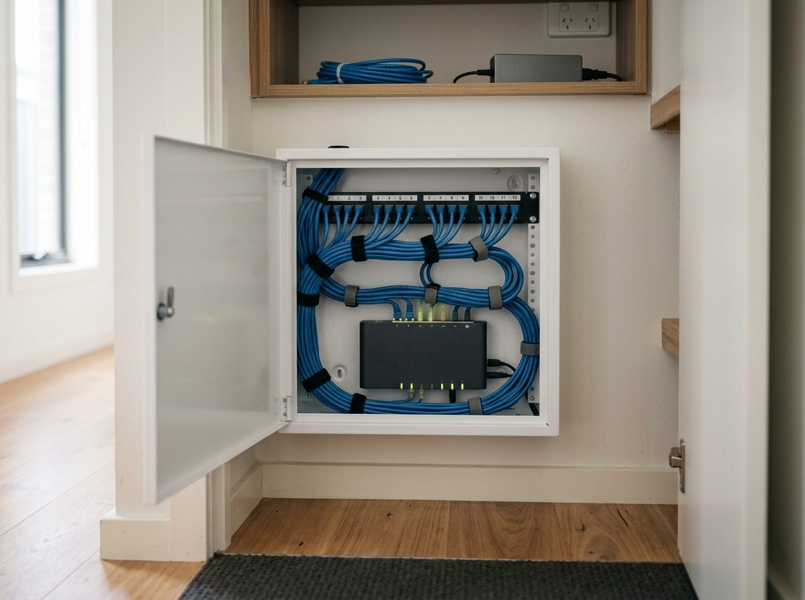
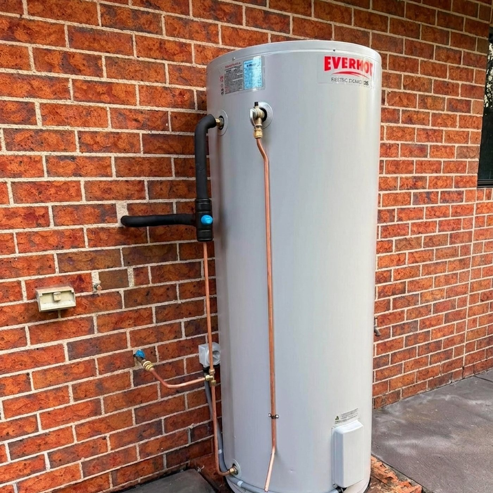

Ben Herbert is a licensed electrician and data cabler based in the Bay and Basin. Switchboard upgrades, EV chargers and hot water on one side; structured cabling, TV, NBN and home networking on the other.

Switchboard upgrades are the job we do most and like most. Plenty of homes around the Bay still run on an old fuse board, and replacing it is the single biggest safety improvement most houses can make.

Most sparkies list data points as an afterthought. Here it is half the business name: cabling for new builds and renovations, TV points where you want the TV, NBN connections and networking that reaches the back room.
Based in the Bay and Basin. The Bay and Basin suburbs are our regular run, with Nowra at the northern end.
Monday to Friday 7am to 3pm, and after hours by phone. Or leave your details and he will call you back.
